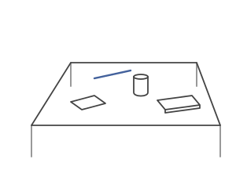

2026
Entry 021: RPV-Mem: a robot that remembers what it wasn't looking for
- When
- began right after my first semester. About 3 months: roughly 2.5 building and 0.5 writing.
- With
- Gavin Paul and his PhD student Adam Scicluna, UTS
- Target
- ACRA 2026, Canberra
The human question: you search a table for your wallet and see a hundred things, including a pen. Later someone asks, “did you see a pen?” You remember it, even though you never meant to.

try it: find the wallet.
You also trust memories differently over time. Where a static object was a moment ago, you trust. Where it was a month ago, much less. For objects that move, the window is different again.
The idea: VLMs can see and understand a scene. So why not make the VLM the robot's brain, the top-level moderator that decides what to do, instead of stacking complex algorithms?
How it started: nobody asked me to do this. I wrote a detailed proposal and sent it to my Robotics Studio tutor. He had me send it formally and forwarded it to the professors. Gavin Paul replied and asked to meet the next day. I made the slides that night. He offered some funding, and I wanted a journal paper. He said to start slower and aim for ACRA.
Approach: I read the literature and found DAAAM, from MIT SPARK Lab. Anything I built had to sit on top of it. But building on it alone wasn't viable, so I designed my own verification gates.
The gates: every memory has a temporal decay value, with tunable weights. The robot only acts on a memory when it's confident the memory is still true.
Status: a proof of concept in simulation, and publication-ready. It hasn't been tested on a real robot yet.
Next: a real robot.